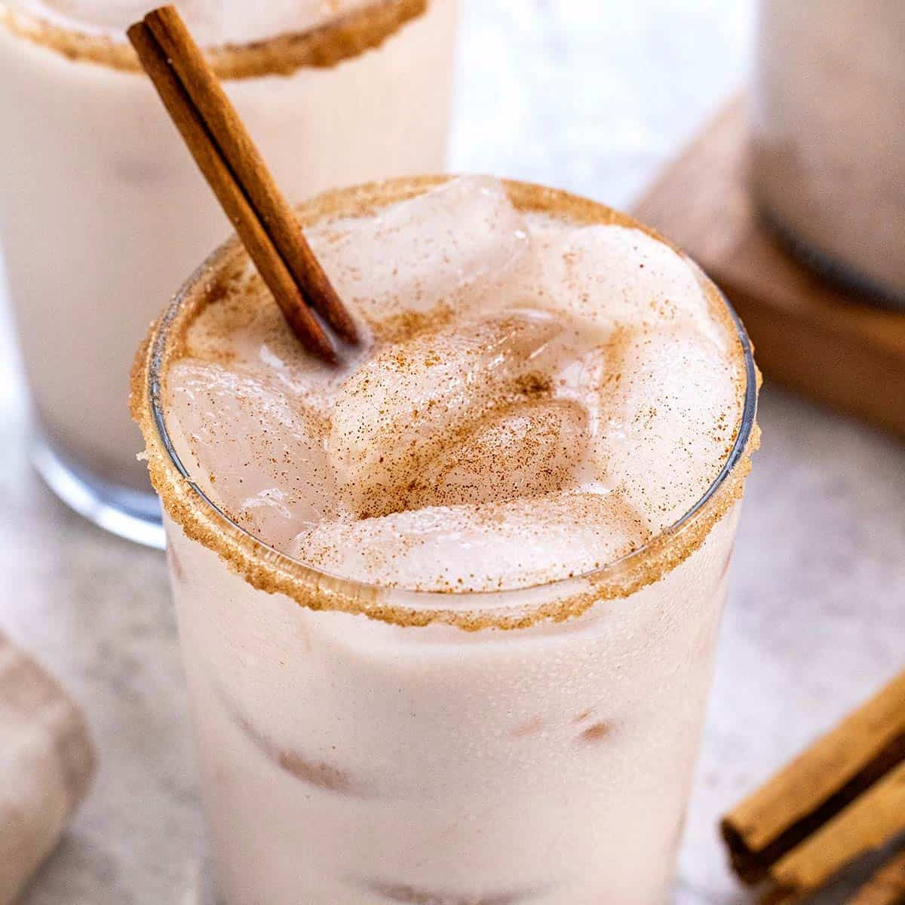

Traditional Mexican Horchata
Horchata de Arroz is a popular & refreshing Mexican drink made with ground
rice, milk and cinnamon. Learn how to make this delicious drink with these
step by step instructions!

My recipe is for traditional Mexican horchata but I’ve seen versions around
the web to fit today’s different diet needs: Some use almond or coconut
milk to make it lactose-free or they use no calorie-sweeteners for
diabetic needs.
While they may taste good, nothing beats the taste of the traditional
version! It’s creamy, flavorful and so refreshing. I hope
you treat yourself to the real deal at least once in a while.
Ingredients
- 1 cup of white rice
-
1 cup sugar adjust depending on how sweet you want - 2/3 cup of sugar
if you want it less sweet.
- 1/2 cup chopped almonds
- 1 cinnamon stick
- 1 Tbsp vanilla
- 1 Can 12 ounces Evaporated milk
- 1.5 cups of milk or almond milk
- 1 Liter of water
- Ice
Instructions
-
Start by soaking the rice, cinnamon, and almonds in a bowl of water
all night, or at least for 5 hours so that the rice softens slightly.
-
Strain the water from the cinnamon, rice, and almond mixture that were
soaking, disposing of water.
-
Blend the cinnamon, rice, and almond mixture with evaporated milk until
a smoother mix is formed and the grains of rice are completely ground.
-
Strain the resulting liquid into a pitcher, and add the sugar, vanilla,
and milk. Mix well until everything is well combined.Add a liter of
water, and serve with ice. Enjoy!